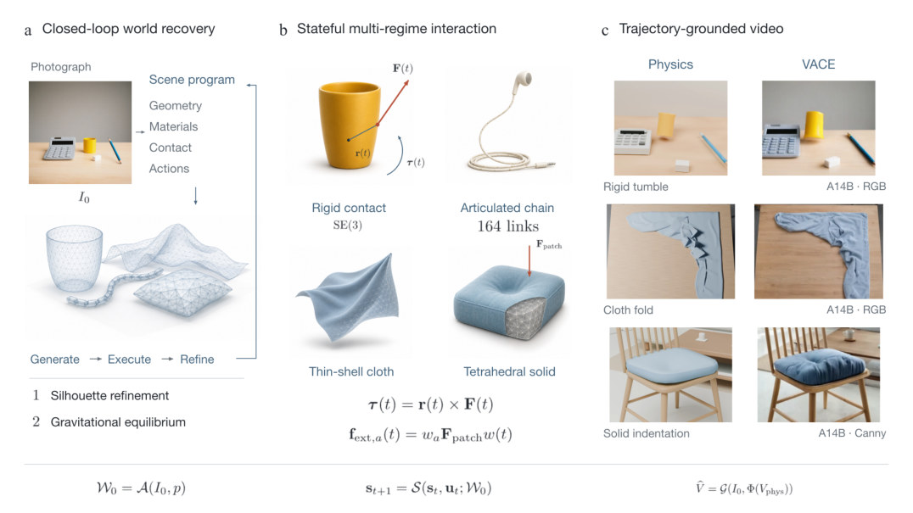
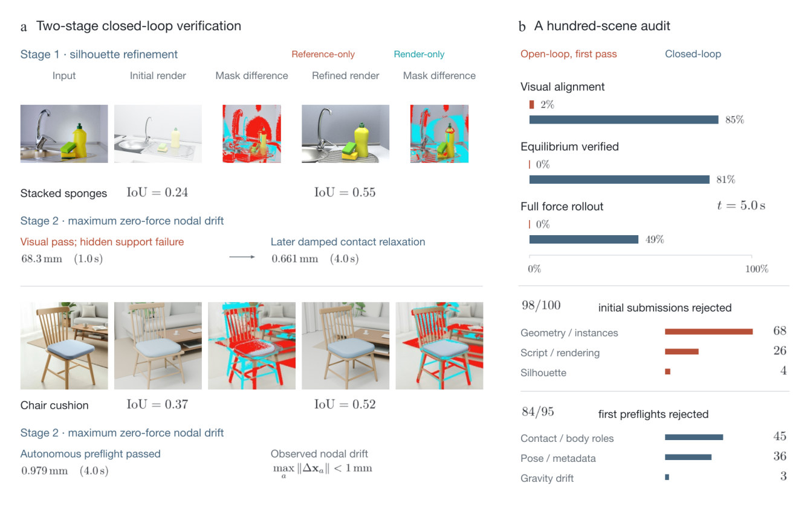
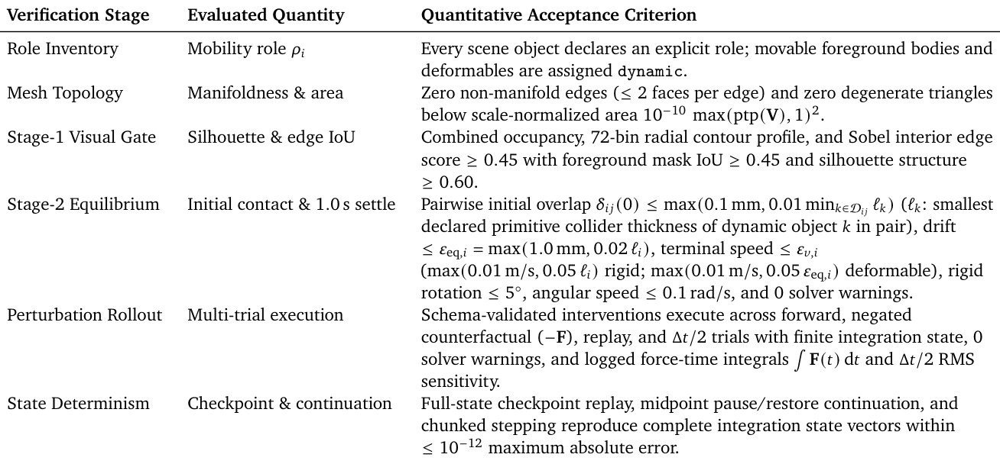
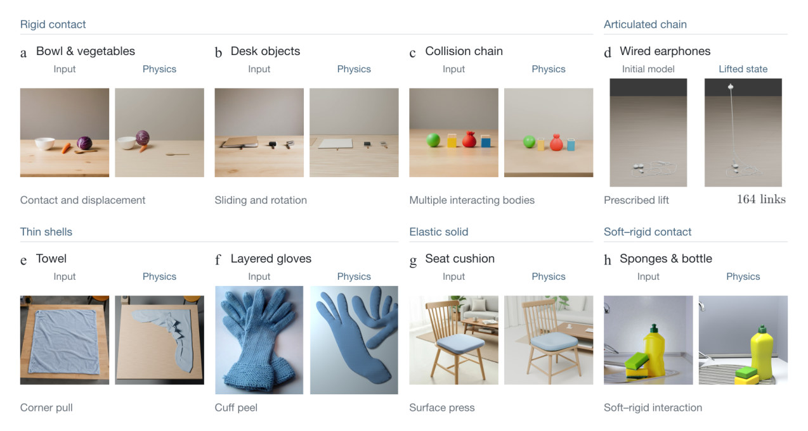
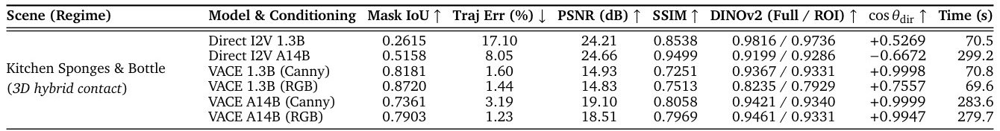
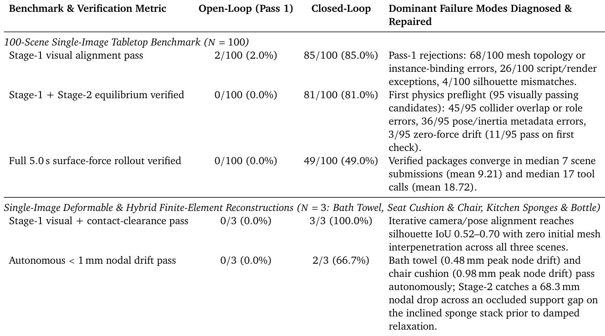
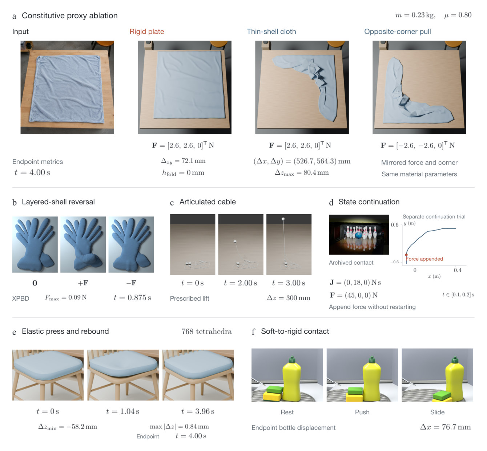
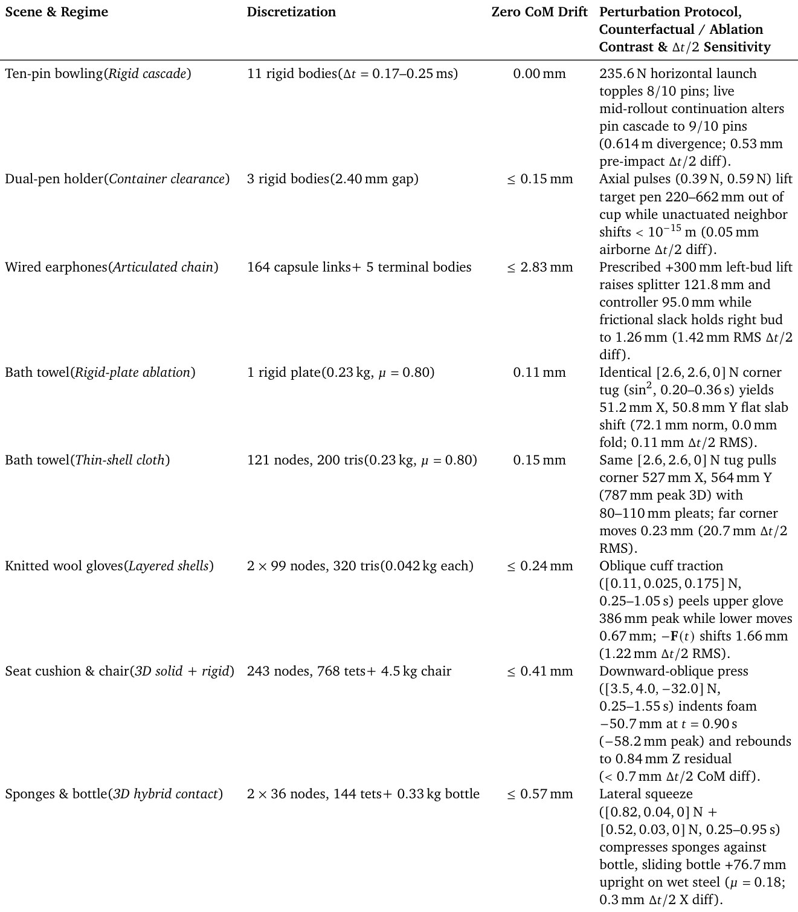
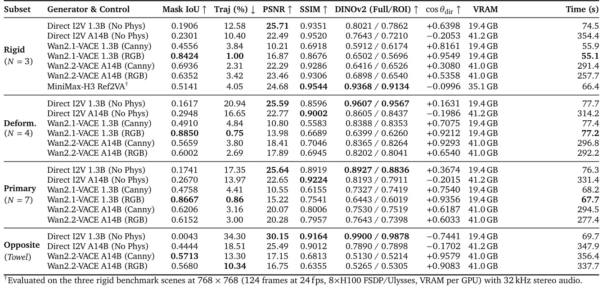
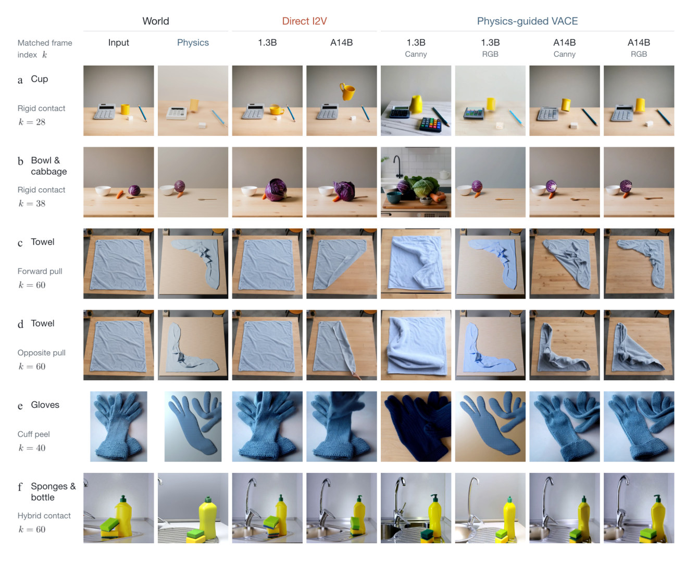

Agent-centric-real-to-sim · 归档于 2026-11-23
TelePhysica
TelePhysica: Agentic Reconstruction of Physically Interactive Scenes
arXiv 注释里的 interactive4d.vercel.app 会跳转到 telephysica.vercel.app。2026-11-23 能打开，确实是这篇的页面。项目页的 "View code" 指向 github.com/Xufeng-Zhan/Interactive_4D，当天返回 404，所以这里没有 Code 链接。项目页的视频对比用的是更大的 benchmark（见 E3）。
归档到 Agent-centric real-to-sim：VLM coding agent 把一张照片写成能跑的多材质物理场景，并用可执行的视觉关和重力关验证；后半段用仿真 rollout 约束视频生成。
TL;DR
- Problem
- 从一张照片重建的场景，2D 上对齐了也可能在重力下穿插、倒塌或悬空。直接 image-to-video 没有显式的 3D 力学状态，所以没法施力、中途续跑，也做不了反事实。
- Idea
- VLM coding agent 写出可分离的 visual mesh 和声明式物理模型（mobility role、collider / FE 网格、m、E、ν、μ）。它要先过像素 silhouette 关，再过零外力 1.0 s 重力平衡 preflight。通过的世界编译进 MuJoCo 统一 solver（rigid、164 节链、cloth shell、四面体 solid），rollout 再作为 Canny / RGB 条件喂给 VACE 生成视频。
- Result
- 100 张桌面照片：平衡验证通过率从单次生成的 0% 升到闭环的 81%（中位 7 次提交），完整 5.0 s 受力 rollout 49%（Table 1）。同一个角点力下，cloth 角点比刚性板多走 10 倍以上（Table 2）。以 rollout 为条件的视频 motion-mask IoU 0.48–0.87，直接 I2V 只有 0.17–0.27（Table 3）。
Problem
照片里"看着对"的场景，放进重力就塌；视频模型又没有能施力的 3D 状态
Running example · 后面每个 stage 都跟着它走
水槽边的两块海绵和一瓶洗洁精（Fig. 2a 第一行、Fig. 3h、Fig. 4f、Fig. 5f）。输入是一张照片 I0：上层海绵斜靠在洗洁精瓶上，搭在下层海绵上，都放在湿的不锈钢沥水板上。另有一段场景描述 p（论文没给原文）。
想要：一个和照片对齐、在重力下静止的可执行世界。侧向推海绵（[0.82, 0.04, 0] N + [0.52, 0.03, 0] N，0.25–0.95 s）时，海绵被压缩并把瓶子推走。最后生成一段保留照片外观、动作跟着物理走的视频。
flowchart LR IN["例子输入
水槽照片 + 描述"]:::example IN --> A1["单次生成
首次提交即定稿"] A1 --> AX["视觉关就没过
IoU 0.24，门槛 0.45"]:::gap IN --> B1["只做视觉闭环
渲染、对比、再改"] B1 --> BX["2D 对齐，重力下塌
IoU 0.55，掉 68.3 mm"]:::gap IN --> C1["Direct I2V
照片 + 动作 prompt"] C1 --> CX["无 3D 状态，方向反
cos θ −0.67"]:::gap
三条 lane 的出处：① IoU 0.24 是 Fig. 2a 的 initial render，也就是论文的 open-loop pass 1（agent 的第一次提交），低于 Table 4 的 0.45 门槛。100 场景上，单次生成只有 2% 过视觉关，0% 过平衡关（Table 1）。② 是推断出的代表：论文没跑 BlenderAlchemy、Thinking-in-Blender 这类视觉闭环方法，这里用的是 TelePhysica 自己只过 Stage 1 时的状态，§4.1 称之为 false visual-only acceptance。100 场景上，84/95 个视觉过关的候选在首次 preflight 被拒。③ 数字来自 Table 5 的海绵行（Direct I2V A14B）。1.3B 版本是 IoU 0.26、轨迹误差 17.10%。
根本问题：单张照片在视线方向上不定。一个悬空几厘米、按比例放大的物体，投影和贴着支撑的物体完全一样（§3.1），所以只看像素的检查会放过不成立的场景；直接生成视频的模型又没有显式力学状态。 这篇的切入点：让 coding agent 把场景写成可执行程序，在 sandbox 里过两道可执行的关（像素 silhouette + 零外力重力平衡），通过后交给统一 solver，再用 rollout 约束视频模型。
Related work
| 相关工作 | 解决什么 | 怎么解决 | 和本文的区别 |
|---|---|---|---|
| 同一问题 · 别的解法 | |||
| 单次程序化场景生成 LayoutGPT、3D-GPT、SceneCraft、Holodeck | 文本 → 3D 布局或 Blender 场景 | LLM 把文字描述写成布局或脚本 | 从文本出发、只产出静态场景、不查物理 → 本文从照片出发，产物必须过重力平衡关 |
| 视觉渲染闭环 BlenderAlchemy、Thinking-in-Blender | 让 3D 程序和目标图像对齐 | VLM 渲染、比较、再改材质和几何 | 只有像素反馈，看不出被遮挡的支撑空隙 → 本文在视觉关之后加零外力 1.0 s 重力 preflight |
| 视频扩散：直接 I2V 与轨迹 / 力条件 Wan VACE（无条件）、DragNUWA、MotionCtrl、Force Prompting、PhysCtrl | 照片 + 动作 → 交互视频 | 把文本、2D 拖拽、稀疏点轨迹或局部力提示注入 denoiser | 没有持久的 3D 接触状态，会冻住或方向反 → 本文用 solver 验证过的 3D rollout 做像素对齐的条件 |
| 单图物理抬升与物理化 3D 表示 PhysGen、PhysGen3D、WonderPlay、RealWonder、PerpetualWonder、Fluid-Gen-Zero；PhysGaussian、PhysDreamer 等 | 让照片或 3D 表示能受力运动 | 抬成 mesh、Gaussian 粒子或流体源；或在 NeRF / 3DGS 里嵌 MPM、弹簧、FEM | 用粒子或神经场，多数需要多视角或单个前景物体 → 本文把 agent 写的 mesh 编进统一的 rigid / 链 / shell / tet solver，带 checkpoint |
| 相似做法 · 别的问题 | |||
| 代码即世界 / 动态逆图形 Code-as-Worlds、VisPhyWorld、4DCodeBench | 用可执行程序表示世界，做物理推理或从视频重建动态 | coding agent 写世界程序，拟合观测到的轨迹 | 拟合的是一段多帧视频的轨迹 → 本文从一张静态照片建平衡世界，之后可以任意施力、续跑、做反事实 |
来源：论文 §2.1–2.3 Related Work，以及 §1、§4.3 里的对比；没有另行检索。实验里只跑了第 3 行的直接 I2V（同一个 VACE 模型，不给仿真流）。其余各行论文都没给对比数字，库里也没有它们的单独页面。
Level 1 · Big picture
Agent 把照片写成能跑的物理世界，两道关挡住"看着对"的错，验证过的世界再拿去交互和生成视频

图里的符号
| 符号 | 白话 | 例子里 |
|---|---|---|
| I0、p | 输入照片、场景的文字描述 | 水槽边海绵 + 瓶的照片；描述原文论文没给 |
| A | 重建 agent（vision-language coding agent） | 用的是哪个模型，论文没写 |
| W0 | 验证过的世界：visual mesh、collider / FE 网格、相机、静止的初始状态 | 两块四面体海绵 + 0.33 kg 的瓶 + 沥水板 |
| st、ut、S | 某一时刻所有位置和速度；这一刻施加的动作；solver 走一步 | u：侧向推海绵，0.25–0.95 s；S：MuJoCo |
| F(t)、r(t)、τ(t) | 作用在刚体上的力、作用点到质心的力臂、由此产生的力矩 | 例子没用（见 Stage 4） |
| Fpatch、wa、w(t) | 一片节点上的总力、每个节点分到的权重（加起来为 1）、0 到 1 的时间窗 | 推海绵的那两个力 |
| Vphys、Φ | 仿真 rollout 的渲染视频；把它变成条件流的方法（Canny 边缘或 RGB） | 瓶子被推开的渲染 |
| G、V̂ | 视频生成模型、生成出的视频 | Wan2.2-VACE-Fun A14B |
怎么读这张图
- (a) Closed-loop world recovery：左上 Photograph I0 进到右边的 "Scene program"，程序分四块：Geometry、Materials、Contact、Actions。下面的线框（杯子、布、链、坐垫）是程序生成的网格。"Generate → Execute → Refine" 加上回到 Scene program 的箭头就是闭环，底部 "1 Silhouette refinement / 2 Gravitational equilibrium" 是两道关。例子：水槽照片变成两块四面体海绵 + 瓶子 + 沥水板。
- (b) Stateful multi-regime interaction：共四种 regime。Rigid contact SE(3)：杯子上的 F(t) 作用在偏离质心的点，力臂 r(t) 产生力矩 τ(t)。Articulated chain 164 links 是耳机线，Thin-shell cloth 是布，Tetrahedral solid 是坐垫，上面的 Fpatch 是一片节点上的分布力。例子是 solid（海绵）和刚体（瓶）的耦合。
- (c) Trajectory-grounded video：左列 Physics 是仿真渲染，右列 VACE 是以它为条件生成的视频。"A14B · RGB / A14B · Canny" 标的是视频模型和条件流。例子对应 Fig. 5f。
- 底部三个式子：W0 = A(I0, p)：agent 从照片和描述建出世界。st+1 = S(st, ut; W0)：solver 按施加的动作一步步推进状态。V̂ = G(I0, Φ(Vphys))：视频模型以照片和处理过的仿真渲染为条件生成视频。
flowchart TD I["Input
水槽照片 I0 + 描述 p"]:::example --> A["Agent 写场景程序
mesh + 物理 schema"] A --> G["两道可执行的关
IoU 0.55 · 漂移 0.661 mm"] G -->|没过：诊断回传| A G --> W["验证过的世界 W0
重力下静止"]:::win W --> S["施力 rollout
瓶子 +76.7 mm"] W --> V["视频
VACE A14B IoU 0.79"]
Level 2 · Stages
5 个 stage（论文 §3.1 拆成前 3 个）
论文把两道关叫 Stage 1（silhouette）和 Stage 2（equilibrium）。本页按整条流水线编号，所以它们是第 2、3 步。
flowchart TD S1["1 · Scene program
2 块海绵 + 瓶 + 台面"] --> S2["2 · Silhouette 关
IoU 0.24 → 0.55"] S2 --> S3["3 · Equilibrium 关
掉 68.3 mm → 修好"] S2 -.->|差异图| S1 S3 -.->|contact / drift trace| S1 S3 --> S4["4 · Multi-regime solver
推瓶 +76.7 mm"] S4 --> S5["5 · Video
IoU 0.52 → 0.79"] click S1 href "#stage-1" click S2 href "#stage-2" click S3 href "#stage-3" click S4 href "#stage-4" click S5 href "#stage-5"
点击 stage 展开 Level 3 细节。跨 Stage 1–3 的"提交 → 关卡 → 诊断 → 重写"循环见 闭环。
Level 3 · Details
每个 stage 的细节
Stage 1 Scene program 照片 + 描述 → visual 脚本 + 声明式物理 schema
- Why：后面的每道关和 solver 都需要"能执行"的场景。外观（mesh）和物理模型（collider、FE 网格、参数）分开写，才能分别检查和替换（§3.1、App. A）。
- How：
- 先列物体清单：每个物体有持久 ID 和 mobility role（dynamic / kinematic / static / visual-only）。规则是可动的前景物体设 dynamic，桌面、地面、墙设 static（§3.1、Table 4）。
- Visual 脚本：程序化生成 manifold visual mesh、PBR 材质、灯光和相机参数。脚本语言和渲染器论文没写。
- 声明式物理 schema：刚体用凸 primitive 或分解出的 collider。Deformable 写节点 ID、静息坐标、单元连接（shell 用三角，solid 用四面体）、固定点、可选的预应力初态，以及本构参数 (m, E, ν, η, μ, rc)（App. A）。
- Schema 编译进 MuJoCo 的 native flex（App. A）。
flowchart LR a["物体清单 + role
海绵×2、瓶：dynamic"] --> b["Visual 脚本
mesh·材质·灯·相机"] b --> c["物理 schema
tet 2×36 节点
E 4.0 kPa · μ 0.18"]
物理模型带哪些量，值从哪来
| 模型里的量 | 是什么 | 例子里的值 | 值从哪来 |
|---|---|---|---|
| mobility role ρ | dynamic / kinematic / static / visual-only | 两块海绵、瓶：dynamic；支撑面按规则设 static | agent 按规则指定（§3.1） |
| visual mesh O | 渲染用的 manifold 网格 + PBR 材质 | 瓶、海绵、水槽 | agent 写的程序化脚本 |
| collider / FE 静息网格 C | 刚体：凸 primitive 或分解 collider；deformable：三角或四面体网格 | 每块海绵 36 节点，共 144 个 tet | agent 写的声明式 schema |
| 质量 m | 刚体惯量；FE 节点上的集中质量 | 海绵各 30 g；瓶 0.33 kg | 材料先验（§5） |
| E、ν、η | 杨氏模量（软硬）、泊松比、粘性阻尼 | E = 4.0 kPa；ν、η 未报告 | 材料先验（§5） |
| μ | Coulomb 摩擦系数 | 湿不锈钢沥水板 0.18 | 材料先验（§5） |
| rc | deformable 节点的接触球半径 | 未报告 | schema 字段（App. A） |
| 相机 M | 焦距等标定 | 具体值未报告 | silhouette 关迭代调出（Stage 2） |
| 初态 s0 | 重力下静止的初始状态 | 修过后 4.0 s 漂移 0.661 mm | equilibrium 关验证（Stage 3） |
参数来源论文只有一句：mass density、Young's modulus、friction 等"按材料先验赋值，而不是从多步视觉交互反馈里在线辨识"（§5）。它没说先验来自 VLM 自己的知识还是查表。也没有哪一关检查这些值对不对：Stage 2 只查位姿和惯量元数据是否合法（100 场景首次 preflight 有 36/95 因此被拒），以及场景是否静止。其他场景的值（§4.2、Table 2、App. A）：毛巾 0.23 kg、μ = 0.80；手套各 0.042 kg（XPBD 版 0.035 kg、μ = 0.55、kstretch 120 N/m、kbend 0.8 N/m）；椅子 4.5 kg。
Running example 在这一步
场景里有三个 dynamic 体（两块海绵 + 瓶，§4.1 称之为 three-body stack）。海绵是四面体 solid，2 × 36 节点、共 144 个 tet，各 30 g，E = 4.0 kPa；瓶是 0.33 kg 的刚体；沥水板是湿不锈钢，μ = 0.18（§4.2、Table 2）。第一次提交渲染出来，IoU 只有 0.24（Fig. 2a）。
Stage 2 Silhouette 关（论文的 Stage 1） 渲染 vs 照片 → 分数 + 红/青差异图 → 改焦距、尺寸、位姿
- Why：焦距、物体尺寸和位姿从一张照片里都定不下来，所以先在像素上把渲染和照片对齐。
- How：
- 渲染每个物体的 silhouette，合成前景 mask Mrend，和照片的参考 mask Mref 比较。Mref 怎么来，论文没写。
- 三种分数：前景 IoU；72-bin 径向轮廓（从质心向 72 个方向量到轮廓的距离）；Sobel 内部边缘的重合度。
- 三联诊断图：红 = 照片有、渲染没有（缺），青 = 渲染有、照片没有（多）。Agent 据此改焦距、物体尺寸和 3D 位姿。
- 门槛（Table 4）：combined score ≥ 0.45，前景 IoU ≥ 0.45，silhouette structure ≥ 0.60。同一阶段还要过 role 清单和 mesh 拓扑（0 条 non-manifold 边、0 个退化三角）。

怎么读这张图
- 左上 "Stage 1 · silhouette refinement"，一行 5 张：Input → Initial render → Mask difference → Refined render → Mask difference。例子在第一行：initial render 的 IoU = 0.24，差异图大片红，说明渲染缺了很多；refined render 的 IoU = 0.55。
- 图例 Reference-only（红）/ Render-only（青）：红是照片里有、渲染里没有，青反过来。这就是回传给 agent 的诊断图。
- "Stage 2 · maximum zero-force nodal drift"："Visual pass; hidden support failure 68.3 mm (1.0 s)" → "Later damped contact relaxation 0.661 mm (4.0 s)"。意思是视觉过了，重力一跑掉了 68.3 mm，修好后只剩 0.661 mm。这一步在 Stage 3 展开。
- 下半 Chair cushion：IoU 0.37 → 0.52，"Autonomous preflight passed 0.979 mm (4.0 s)"，判据是 maxa‖Δxa‖ < 1 mm（所有节点的最大位移小于 1 mm）。它没有遮挡空隙，一次过关，是例子的对照。
- 右边 (b) "A hundred-scene audit"：三组条形就是 Table 1 的数字（2% vs 85%、0% vs 81%、0% vs 49%），下面是首次提交被拒（98/100）和首次 preflight 被拒（84/95）的原因分类，见 E1。
flowchart TD r["渲染 silhouette
initial IoU 0.24"]:::gap --> d["三联差异图
红 = 缺 · 青 = 多"] d --> u["Agent 改程序
焦距 · 尺寸 · 位姿"] u -->|重新渲染| r u --> p["过视觉关
IoU 0.55，结构 0.66"]:::win
Running example 在这一步
IoU 从 0.24 升到 0.55，silhouette structure 0.66，零初始穿插（§4.1），过关。但上层海绵下面有一道被遮住的竖直空隙，像素里看不出来。
Stage 3 Equilibrium 关（论文的 Stage 2） 候选世界 → 零外力 1.0 s 沉降 → 通过，或带 trace 打回
- Why：2D 对齐不等于有支撑。一个悬空的物体沿视线按比例放大后，投影和贴着桌面的物体一样（§3.1）。
- How：
- 候选世界编译进 solver：外力 ut = 0，只有重力 g，积分 Teq = 1.0 s。
- 对每个 dynamic 物体检查 Eq. 2（阈值见 Table 4）：初始穿透、1.0 s 内的位移、末速度、刚体转角和角速度、数值有限、0 个 solver 警告。
- 不过就把 contact / drift trace（碰撞重叠、role 设错、下落）交回 agent 改几何。
- 遮挡下的多体 deformable 堆叠：先做 damped quasi-static settling，消掉残余的接触空隙，再重验 Eq. 2，保证导出的 W0 从静止开始。
Eq. 2 和 Table 4 里的符号
| 符号 | 白话 | 例子里 |
|---|---|---|
| δmax(0)、εc | 开始时所有接触里最深的穿透；允许值 = max(0.1 mm, 1% × 这对物体里最薄 primitive collider 的厚度 ℓ) | 零初始穿插（§4.1） |
| xi(t) − xi(0) | 物体 i 相对初始位置的位移（deformable 看每个节点） | 首次 1.0 s 内最大 68.3 mm |
| εeq,i | 允许的漂移 = max(1.0 mm, 2% × ℓi) | 按"节点漂移小于 1 mm"判（Table 1） |
| ẋi(Teq)、εv,i | 1.0 s 末的速度和上限：刚体 max(0.01 m/s, 0.05 ℓi)，deformable max(0.01 m/s, 0.05 εeq,i) | 未报告 |
| Δθi、ωi(Teq) | 刚体转角和末角速度，上限 5° 和 0.1 rad/s | 瓶子未单独报告 |
| Nwarn | solver 警告数，必须为 0 | — |

怎么读这张表
- Role Inventory：每个物体声明 role，可动的前景物体和 deformable 都设 dynamic。
- Mesh Topology：0 条 non-manifold 边（每条边最多挨 2 个面），0 个退化三角（面积低于按尺度归一的 10−10）。
- Stage-1 Visual Gate：combined 分数 ≥ 0.45，前景 mask IoU ≥ 0.45，silhouette structure ≥ 0.60。
- Stage-2 Equilibrium：初始重叠、1.0 s 漂移、末速度、转角 ≤ 5°、角速度 ≤ 0.1 rad/s、0 个 solver 警告，符号见上表。
- Perturbation Rollout / State Determinism：导出后的两道关。受力试验要在 forward、−F、回放、Δt/2 四种设置下都数值有限、0 警告；checkpoint 回放、中途暂停恢复、分块步进的状态误差 ≤ 10−12。
flowchart TD c["编译进 solver
u = 0，只有重力"] --> sim["模拟 1.0 s
节点掉 68.3 mm"]:::gap sim --> fix["修支撑 + 松弛
damped quasi-static"] fix --> re["重验 4.0 s
0.661 mm，过 1 mm 线"]:::win re --> out["导出 W0
三体平衡"]
Running example 在这一步
首次 preflight：1.0 s 内节点最大下落 68.3 mm，被拒（Fig. 2a、Table 1）。修支撑并做 damped contact relaxation 后，4.0 s 内节点最大漂移 0.661 mm、质心漂移 ≤ 0.57 mm，三体平衡，导出 W0。对照：坐垫没有遮挡空隙，自动过关（0.979 mm / 4.0 s）。
看图推断：修好后上层海绵平放在下层上（Fig. 4f 的 Rest、项目页仿真视频首帧），不再像照片那样斜靠瓶身。修好后和照片的 IoU，论文没报告。
Stage 4 Multi-regime solver W0 + 动作 → rollout + 可回放的 checkpoint
- Why：施力、续跑和反事实都需要显式状态 st = (qt, vt)，而且这个状态不依赖任何视频模型（§3.2）。
- How：
- st+1 = S(st, ut; W0)：四类物体编译进同一个带接触耦合的运动方程（Eq. 3）。
- Rigid：在 SE(3) 上运动，每个自由体 6 个速度坐标，用凸 primitive 或分解 collider，摩擦是椭圆摩擦锥。
- 1D 柔性体（耳机线）：capsule 链加球铰，节段不可伸长，传递轴向拉力和表面摩擦。
- Shell（三角网格）：膜内拉伸 + 跨边弯曲，模拟织物；另用 XPBD shell 交叉验证（App. A）。
- Solid（四面体）：由 E、ν、粘性阻尼参数化，模拟泡沫和坐垫。隐式速度积分；deformable 和 dynamic 刚体之间双向传递接触力（节点接触球半径 rc）。
- 施力：刚体上，在照片里画一笔 2D stroke，相机射线找到 3D 锚点，F = α·ℓ·m·g·w(t)·d̂（按物体重量缩放），τ = r × F（偏心会产生翻倒、俯仰、偏航）。Deformable 上，用一片节点上的 patch traction，权重和为 1、sin² 时间窗，避免单个节点上应力奇异。冲量用 Δv = M−1J；指定轨迹用 quintic smoothstep。
- Checkpoint ξt 存 q、v、warm-start 接触状态和正在执行的扰动计划，bit-exact。因此可以精确回放、中途续跑、从同一个 s0 分叉做反事实。
施力公式（Eq. 4、5）里的符号
| 符号 | 白话 | 例子里 |
|---|---|---|
| ℓ、d̂ | 照片上那一笔的归一化长度；那一笔投到和相机平行的平面后的单位方向 | 例子没用 stroke |
| mk、g、α | 被推刚体的质量、9.81 m/s²、增益 | α 未报告 |
| xa、xk、r | 3D 锚点、刚体质心、力臂 r = xa − xk | — |
| w(t) | 0 到 1 的时间窗（deformable 用 sin² 平滑） | 0.25–0.95 s |
| Fpatch、P、wa | 一片节点上的总力；这片节点；每个节点分到的权重（加起来为 1） | [0.82, 0.04, 0] N 和 [0.52, 0.03, 0] N |

怎么读这张图
- 上排 "Rigid contact"（a–c）：碗与蔬菜、桌面物品、碰撞链。每格左边 Input 是照片，右边 Physics 是受力后的仿真状态；Contact and displacement、Sliding and rotation、Multiple interacting bodies 是各自演示的接触类型。
- (d) "Articulated chain" 耳机线：只有 "Initial model" 和 "Lifted state"（164 links），没有输入照片，演示的是 prescribed lift。
- 下排 "Thin shells"（e、f）：毛巾拉角（Corner pull）、两只叠放的手套剥离（Cuff peel）。
- "Elastic solid"（g）与 "Soft–rigid contact"（h）：(g) 是坐垫按压。(h) Sponges & bottle 就是例子：左边是照片，右边是推完后的仿真状态，瓶子已被推开。
flowchart LR w["W0 + 动作
patch traction"] --> sim["统一 solver
tet 海绵 ↔ 刚体瓶"] sim --> out["Rollout
瓶 +76.7 mm"]:::win sim --> ck["Checkpoint ξ
回放误差 0.000 mm"]
Running example 在这一步
侧向 patch traction [0.82, 0.04, 0] N + [0.52, 0.03, 0] N，0.25–0.95 s。泡沫被压在瓶身上，冲量穿过接触面传给瓶子，瓶子直立着滑出 +76.7 mm（Fig. 4f、Table 2）。步长减半时，瓶子 X 位移只差 0.3 mm；回放误差 0.000 mm。
例子没用到 2D stroke（Eq. 4）：海绵是 deformable，走的是 Eq. 5。Eq. 4 的用法见 Fig. 1b 的杯子。
Stage 5 Video rollout 渲染 → Canny / RGB 条件流 → 保留照片外观的视频
- Why：仿真渲染是平的合成外观；我们想要的视频要保留照片外观，动作又跟着物理走（§3.3）。
- How：
- 渲染 Vphys：刚体的 visual mesh 保留初始的 body-to-visual 偏移 Trel，不会在首帧跳位。比 FE 网格更细的 visual mesh（毛巾包边、针织罗纹、坐垫缝线）用 linear-blend + normal-offset skinning：每个顶点绑 K 个仿真节点（K = 1、3、4 或 8），再加一个沿法线的厚度偏移（Eq. 6）。
- 条件流 Φ 有两种。Canny 是稀疏轮廓：约束 silhouette，内部纹理交给参考照片。RGB 是稠密着色：提供遮挡顺序和表面朝向。
- 生成器：Wan2.1-VACE 1.3B、Wan2.2-VACE-Fun A14B（512 × 512、81 帧、30 步）。刚体场景另试了 MiniMax-H3 Ref2VA：Vphys 直接作 motion reference，并生成 32 kHz 音频。
- 对照组 Direct I2V：同一个 VACE 模型，只给照片 + 动作 prompt，不给 Vphys（据项目页的生成设置）。
flowchart LR r["渲染 V_phys
offset + skinning"] --> phi["条件流 Φ
Canny 或 RGB"] phi --> g["VACE
A14B RGB：IoU 0.79"]:::win i["参考照片 I0
水槽照片"] --> g

怎么读这张表
- Mask IoU、Traj Err：生成视频的运动区域和仿真轨迹重合多少、质心轨迹偏多少（占图宽的 %）。两行 Direct I2V 是 0.2615 / 0.5158，四行 VACE 是 0.7361–0.8720。
- cos θdir：净运动方向和仿真方向的夹角余弦，+1 是同向，−1 是反向。Direct I2V A14B 是 −0.6672，VACE 四行在 +0.7557 到 +0.9999 之间。
- PSNR、SSIM、DINOv2：静态背景和照片有多像、整体外观多像。Direct I2V 的 PSNR 反而更高（24.21 / 24.66 dB），因为它基本照抄了照片；VACE 是 14.83–19.10 dB。
Running example 在这一步
同一个 A14B backbone，只差有没有仿真条件流：IoU 从 0.5158 升到 0.7903，轨迹误差从 8.05% 降到 1.23%，方向余弦从 −0.6672 变成 +0.9947（Table 5）。
Stage 1–3 闭环：提交 → 关卡 → 诊断 → 重写 贯穿前三步的 agent 循环
- Why：一次写不对：100 个场景的首次提交有 98 个被 Stage 1 拒，而且错的种类很多（拓扑、异常、穿插、role、惯量），所以要把执行结果结构化地还给 agent。
- How：
- Agent 在 headless 渲染 + 物理 sandbox 里通过 tool call 工作，把整个场景包作为一次 scene submission 交给关卡（两者分开计数，Table 1）。
- 关卡顺序（Table 4）：role 清单 → mesh 拓扑 → Stage-1 视觉 → Stage-2 平衡。导出后再查受力 rollout（forward、−F、回放、Δt/2）和 checkpoint 的确定性（误差 ≤ 10−12）。
- 回传的诊断包括：脚本或渲染异常、non-manifold 边、红/青差异图、contact 与 drift trace。
- 收敛：中位 7 次提交（均值 9.21），中位 17 次 tool call（均值 18.72）（Table 1）。
- 论文没写的：VLM 型号、prompt、提交上限或预算。
flowchart TD a["首次提交
98/100 被 Stage 1 拒"]:::gap --> b["视觉关迭代
95 个过视觉关"] b --> c["首次 preflight
84/95 被拒"]:::gap c --> d["按 trace 修
81/100 平衡通过"]:::win d --> e["5.0 s 受力 rollout
49/100 通过"]
首次提交被拒的原因：68 个 mesh 拓扑或实例绑定错误、26 个脚本或渲染异常、4 个轮廓不符。首次 preflight 被拒的原因：45 个碰撞重叠或 role 错、36 个位姿或惯量元数据错、3 个零外力漂移；只有 11/95 一次过（Table 1）。
Running example 在这一步
例子被拒了两次：先在 Stage 1（IoU 0.24），后在 Stage 2（掉 68.3 mm）。两次修改都由回传的诊断驱动。
Recap：例子覆盖了论文的哪些 idea
| 论文里的 idea | 例子里在哪体现 |
|---|---|
| 照片 + 描述 → 场景程序（visual mesh + 声明式物理） | Stage 1：两块 tet 海绵 + 瓶 + 沥水板 |
| mobility role 清单 | Stage 1：海绵和瓶 dynamic，支撑面 static |
| 物理参数来自材料先验 | Stage 1：30 g、E 4.0 kPa、0.33 kg、μ 0.18 |
| Silhouette 关（IoU、径向轮廓、Sobel、红/青诊断图） | Stage 2：IoU 0.24 → 0.55 |
| 零外力重力 preflight | Stage 3：1.0 s 掉 68.3 mm，被拒 |
| damped quasi-static settling | Stage 3：修好后 4.0 s 漂移 0.661 mm |
| 结构化诊断闭环 | 闭环：例子被拒两次；100 场景中位 7 次提交 |
| 统一多 regime solver（tet solid 和刚体耦合） | Stage 4：海绵压缩，推瓶 76.7 mm |
| patch traction | Stage 4：[0.82, 0.04, 0] N + [0.52, 0.03, 0] N |
| 2D stroke → 力和力矩（Eq. 4） | 例子没用（海绵是 deformable）；见 Fig. 1b 的杯子 |
| checkpoint：回放、步长敏感度 | Stage 4：回放误差 0.000 mm，Δt/2 差 0.3 mm |
| 反事实（−F）与中途续跑 | 例子没做；见 E2：毛巾镜像拉、手套 −F、保龄球续跑 |
| cloth shell vs 刚性板消融 | 例子没做；见 E2 的毛巾 |
| skinning 与 body-to-visual 偏移 | Stage 5：渲染 Vphys |
| Canny / RGB 条件的 VACE 视频 | Stage 5：IoU 0.26 / 0.52 → 0.74–0.87 |
| 100 场景 benchmark 0% → 81% | E1（刚体桌面场景；例子属于 N = 3 的 deformable 组） |
Results
闭环关卡让单图重建从 0 变成 81% 可用；显式本构给出刚体近似给不出的局部变形；rollout 作条件让视频跟着力走
顺序同论文 §4：E1 两道关是否必要（通过率）→ E2 显式连续体力学比刚体近似多了什么（位移、褶皱、漂移）→ E3 仿真 rollout 作条件能否让视频跟着力走（运动一致性 vs 外观）。三个实验都没有真实世界的 ground truth：E1 比的是自家关卡的通过率，E2 是仿真内部对比，E3 的运动指标以仿真 rollout 为参照。
E1两道关是否必要：单次生成 vs 闭环§4.1

- 说明什么
- 闭环把能用的世界从 0 变成多数。100 张桌面照片：视觉关 2% → 85%，平衡验证 0% → 81%，完整 5.0 s 受力 rollout 0% → 49%，中位 7 次提交、17 次 tool call。Deformable 组：视觉 + 接触间隙 0/3 → 3/3，自动通过"节点漂移小于 1 mm"0/3 → 2/3（例子要靠 damped 松弛才过）。
- 在故事里
- 撑起核心论点：只看像素不够，必须有可执行的物理关。84/95 个视觉过关的候选在首次 preflight 仍被拒（88.4%）。
- 指标
- 视觉关：combined ≥ 0.45、IoU ≥ 0.45、silhouette structure ≥ 0.60。平衡关：Table 4 的穿透、漂移、末速度、转角、警告阈值。5.0 s rollout：forward、−F、回放、Δt/2 都数值有限且 0 警告。每个场景一次 agent 运行。
- 怎么评测
- 100 张单图桌面刚体场景（器皿、文具、蔬果、灯、鞋、容器），加 3 个 deformable / hybrid 场景（毛巾、坐垫 + 椅子、海绵 + 瓶）。
- Open-loop 是同一个 agent 的第一次场景提交，用同样的关卡评。没有跑外部方法（SceneCraft、PhysGen3D 等）。
- 关卡是作者自己定的，过关不等于和真实场景一致：没有 3D 或物理的 ground truth。照片来源、VLM 型号和提交预算也都没报告。
- 81 个过平衡关的世界里，有 32 个没完成 5.0 s rollout，论文没分析原因。
E2显式连续体力学 vs 刚体近似：同样的力，换个本构会怎样§4.2

图里的符号
| 符号 | 白话 | 例子里 |
|---|---|---|
| F、J | 施加的力（N，x、y、z 三个分量）；冲量（N·s，一下子改变速度） | [0.82, 0.04, 0] N + [0.52, 0.03, 0] N |
| Δxy、(Δx, Δy) | 水平面内的位移 | 瓶 Δx = 76.7 mm |
| hfold、Δzmax | 褶的高度（节点最大抬高） | — |
| Δzmin、max|Δz| | 最深下压量、结束时剩下的高度变化 | — |
怎么读这张图
- (a) Constitutive proxy ablation（右上 m = 0.23 kg、μ = 0.80）：同一条毛巾、同一个角点力 F = [2.6, 2.6, 0]T N。Rigid plate 只平移 Δxy = 72.1 mm，hfold = 0 mm。Thin-shell cloth 的角点走到 (Δx, Δy) = (526.7, 564.3) mm，褶高 Δzmax = 80.4 mm。Opposite-corner pull 把力和角点都镜像，折出对称的褶。端点在 t = 4.00 s。
- (b) Layered-shell reversal：XPBD 手套，0 / +F / −F 三种，Fmax = 0.09 N，t = 0.875 s。+F 掀起上层袖口，−F 把它压在下层上。
- (c) Articulated cable：把一只耳塞按指定轨迹抬 Δz = 300 mm，画面是 t = 0、2.00、3.00 s。
- (d) State continuation：保龄球先给冲量 J = (0, 18, 0) N·s，再在 t ∈ [0.1, 0.2] s 追加 F = (45, 0, 0) N，不重开仿真。右图是这次续跑的轨迹（Separate continuation trial），红点标出追加力的位置。
- (e) Elastic press and rebound：768 个四面体的坐垫，t = 1.04 s 压到 Δzmin = −58.2 mm，t = 4.00 s 回弹到 max|Δz| = 0.84 mm。
- (f) Soft-to-rigid contact：就是例子：Rest → Push → Slide，瓶子终点位移 Δx = 76.7 mm。

- 说明什么
- 可变形本构给出刚体近似给不出的局部运动。同质量、同摩擦、同一个角点力：cloth 角点走到 (526.7, 564.3) mm，峰值 3D 位移 787 mm，起 80–110 mm 的褶；刚性板只平移 72.1 mm，没有褶（相差 10 倍以上）。另外：手套正向拉 386 mm，反向只有 1.66 mm；耳机线抬 300 mm，带起分线器 121.8 mm，右耳塞只动 1.26 mm；坐垫压到 −58.2 mm 后回弹到 0.84 mm；海绵推瓶 76.7 mm；保龄球中途加力，倒下的瓶从 8/10 变成 9/10。所有场景的回放误差都是 0.000 mm。
- 在故事里
- 证明验证过的世界确实能交互：反事实、续跑、多 regime 都跑在同一个 solver 和 checkpoint 上。
- 指标
- 端点位移和褶高（mm）、零外力质心漂移、正反向力的位移对比、回放误差、Δt/2 步长敏感度（RMS 差）。
- 怎么评测
- 每个 regime 一个场景，全在仿真里，没有真实的受力视频或测量做对照。
- 消融只换本构（cloth shell 换成刚性板），几何、质量、摩擦、力都不变。
- 材料参数来自先验，所以位移的绝对值不代表真实的毛巾。Cloth 的 Δt/2 RMS 差是 20.7 mm，各场景里最大（Table 2）。
- 耳机线（Fig. 3d）只给了 "Initial model"，没有输入照片。
E3仿真 rollout 作条件，视频能否跟着力走§4.3


怎么读这张图
- 列：World（Input 照片、Physics 仿真渲染）→ Direct I2V（1.3B、A14B，只给照片 + prompt）→ Physics-guided VACE（1.3B Canny、1.3B RGB、A14B Canny、A14B RGB）。左边的 k 是对齐的帧号。
- 行 a Cup：Direct I2V A14B 把杯子悬在半空（§4.3）。
- 行 c、d Towel 正向 / 反向拉：Direct I2V 1.3B 两行几乎和输入一样，也就是冻住了（IoU 0.0132 / 0.0043，Table 5）。A14B 两行折的是同一个角：§4.3 说不管 prompt 指哪个角，它都折右下角。VACE 各列跟着 Physics 列折对的角。
- 第 5 列 VACE 1.3B Canny：背景和纹理漂了（b 行变成另一间厨房，Primary 平均 PSNR 10.55 dB）。第 6 列 1.3B RGB 形状准，但把仿真里平的网格着色抄到了织物上。
- 行 f Sponges & bottle：就是例子，对比 Physics 列和最后两列 A14B。
- 说明什么
- 运动更一致：VACE 跟着仿真走，Direct I2V 不是冻住就是方向反。7 个主场景：mask IoU 0.48–0.87 vs 0.17–0.27（2.3×–5.0×），轨迹误差 0.86–4.41% vs 13.97–17.35%。反向拉毛巾：VACE A14B 的 cos θ 是 +0.96 / +0.91，Direct I2V A14B 是 −0.17、1.3B 是 −0.74。代价在外观：1.3B Canny 的背景 PSNR 只有 10.55 dB，1.3B RGB 在 deformable 组的 DINOv2 只有 0.64。A14B 两项都好（deformable 组 DINOv2 全图 0.84 / 0.82），但显存 41.0 vs 19.4 GB，Primary 平均每段 277–295 s，1.3B 只要约 68 s。
- 在故事里
- 验证过的世界的第二个用途：让视频生成可控、能做反事实，同时摆出模型规模和条件密度之间的取舍。
- 指标
- dynamic motion-mask IoU（生成视频的运动区域 vs 仿真轨迹）；质心轨迹误差（占图宽的 %）；静态背景 PSNR / SSIM（对比 I0）；DINOv2 ViT-L/14-reg4 余弦（全图 / ROI）；cos θdir（净运动方向和仿真轨迹的余弦）。
- 怎么评测
- 7 个主交互（杯子翻滚、笔记本滑动、碗与紫甘蓝碰撞、毛巾拉角、手套剥离、海绵推瓶、坐垫按压），加 2 个反事实（反向拉毛巾、杯子水平滑），共 53 段视频，每个配置 1 段。设置是 512 × 512、81 帧、30 步。
- Direct I2V 是同一个 VACE 模型只给照片 + 动作 prompt（项目页的生成设置）。
- 对 VACE 有利：运动指标的参照就是 VACE 收到的仿真 rollout。没有真实视频做 ground truth。
- 论文没提的：杯子反事实在 Table 5 里只有 Direct I2V 两行，没有 VACE；笔记本滑动上 VACE A14B 方向是反的（cos θ −0.6634 / −0.3003，Table 5）；MiniMax-H3 在刚体组的平均 cos θ 是 −0.0996（Table 3）。
- 项目页另有一个更大的 benchmark（2026-11-09：53 个场景 × 8 个生成 arm，共 480 段）。例如 Wan2.1 1.3B 只给图文时 motion IoU 0.0604，给 RGB 后 0.7522；Wan2.2 A14B 是 0.1987 vs Canny 0.5458。本页用的是论文的数字。
Limits
局限和开放问题
- 论文自己承认：密度、Young's modulus、摩擦这些本构参数是按材料先验赋的，没有从多步视觉交互反馈里在线辨识。作者把闭环系统辨识列为下一步（§5）。
- 工作还在进行中（arXiv 注明 Ongoing Work）。81 个过平衡关的世界只有 49 个完成 5.0 s 受力 rollout，另外 32 个为什么失败，论文没分析（Table 1）。
- 评测是封闭的：E1 用自家关卡，E2 全在仿真里，E3 以仿真 rollout 为参照。没有真实的 3D 几何或受力运动做对照，也没有和 PhysGen3D、WonderPlay 等外部方法比。
- 视频实验规模小：7 个主场景，每个配置 1 段。VACE A14B 在笔记本滑动上方向反了，MiniMax-H3 刚体组平均 cos θ 为负，杯子反事实没有 VACE 结果（Table 3、5）。
- 不透明：VLM 型号、脚本语言和渲染器、参考 mask Mref 的来源、输入照片是实拍还是生成，论文都没写；项目页的代码链接 2026-11-23 返回 404。
- 修平衡可能改了布局：例子修好支撑后，上层海绵从斜靠变成平放（对比 Fig. 2a 的 refined render 和 Fig. 4f 的 Rest，看图推断）。修好后和照片的 IoU 论文没报告。
- 没有机器人：交互全是施加的力、冲量和指定轨迹，没接机器人，也没做策略学习。
For Agent-centric real-to-sim
对我们有什么用
- r2s-lite（pot-lid episode 第 9 次靠宽松规则过关，场景却是错的）：验收改成可执行关卡，至少照搬 Stage 2。任务 rollout 之前，在 Isaac Sim 里 u = 0 跑 1 s，检查初始穿透 ≤ max(0.1 mm, 1% 最薄 collider)、漂移 ≤ max(1 mm, 2% 特征尺寸)、转角 ≤ 5°、0 个 solver 警告；失败时把 contact / drift trace 交回 agent。例子里 IoU 0.55、"看着对"的场景照样掉了 68.3 mm。
- real2sim-anything-indoor（video → Blender room、GVHMR 人体动作）：借它的 mobility role 清单（dynamic / kinematic / static / visual-only，桌面、地面、墙一律 static），以及红/青 mask 差异图作 Blender 侧的视觉反馈。导出到仿真时保留 body-to-visual 偏移 Trel，避免首帧跳位。GVHMR 的人可以作为 kinematic 体，按指定轨迹接进来（Stage 4 的 prescribed trajectory）。
- WorldClaw（prompt → white-box scene → Genesis）：白盒场景可以直接用声明式物理 schema（role + FE 静息网格 + m、E、ν、η、μ）和 checkpoint，把 −F 反事实、回放、Δt/2 写成自检 skill。渲染端可以把 Genesis rollout 转成 Canny / RGB 喂给 VACE：1.3B RGB 运动最准（IoU 0.87）但外观差，A14B 外观好但要 41 GB 显存。参数来自先验时要标出来，别当成辨识结果。